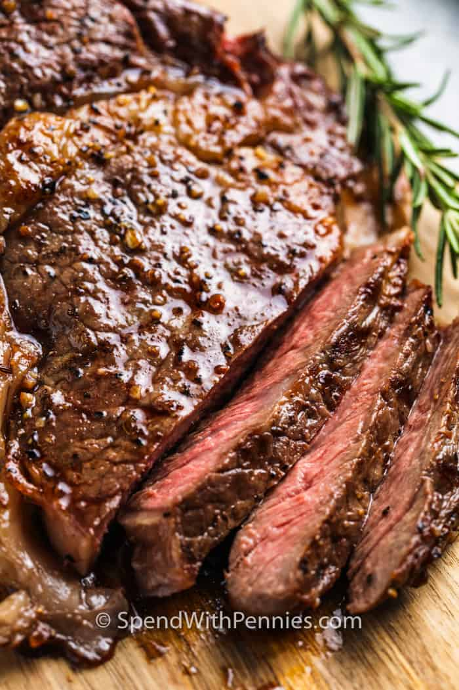

Pan-Fried Steak

Description
Good for any occasion, simple dinner, dinner date, special occasions.
With enough practice, and the right cut of beef you can eat like a rich man
any day of the week at a fraction of the cost that a resteraunt would do.
Ingredients
- 1 Steak cut, preferrably ribeye, filet, NY strip, Chuck - eye
- Salt, enough to season/dry brine
- Pepper, to taste
- 1 garlic clove
- Oil, canola or ghee/beef tallow
- 1 tablespoon of butter
- Optional, Twig of rosemary/thyme
Steps
- Start off with a cold piece of steak that you will be cooking.
Make sure its defrosted but not to room temperature.
Salt the steak, liberally (dont worry we will be wipeing it off),
and place in the fridge preferrably 4 or more hours before cooking.
- Take steak out of fridge and take a paper towel to wipe off any excess moisture and salt coating the beef.
- Season steak with salt or any seasoning that you want and wait till beef is about room temperature.
Durring this time, heat up a frying pan on medium- high heat and coat it with preferred oil.
- When the pan starts smoking, carefully place the steak in the pan with it coming down from front to back.
Flip when a nice crust is formed. Place butter, garlic and rosemary/thyme in pan with the steak.
- Baste the steak using a spoon with the melted butter as you cook.
Periodically check the steaks internal temperature with a digital thermometer.
Until desired doneness 125 degress for rare, 135 for medium rare, 145 for medium.
Any higher you are going to jail!!!!!
- take out of the pan, place on cutting board and let it rest for at least 10 minutes. Season with Pepper to taste.